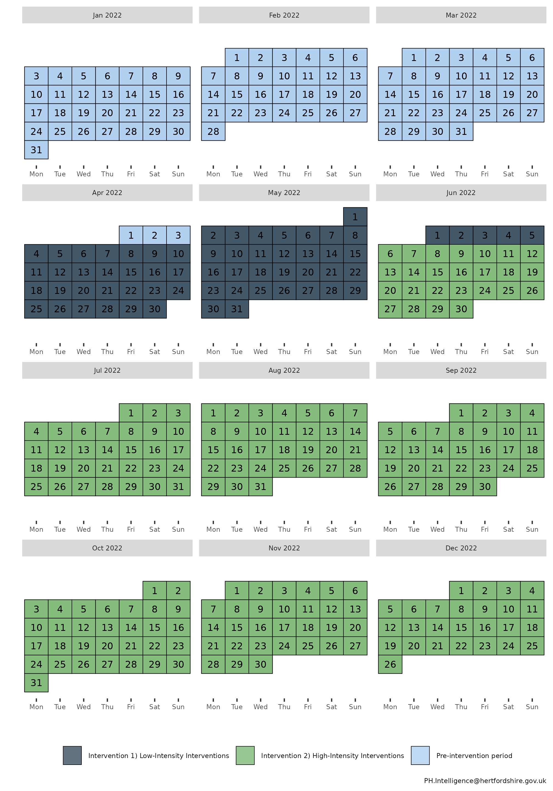
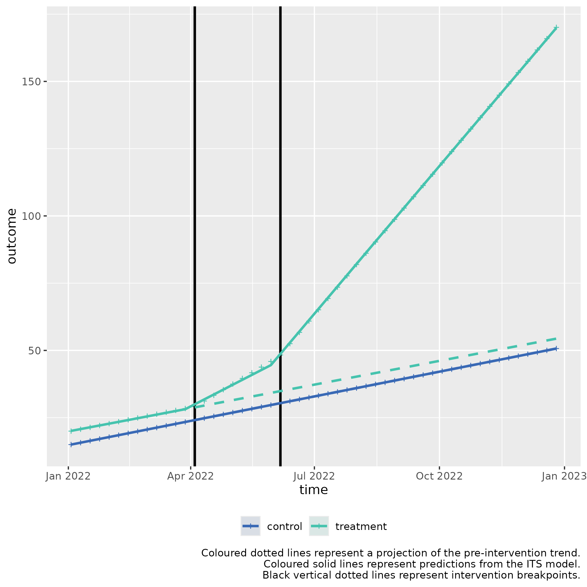

Multiple ITS control introduction for slope 2 (second example)
ITScontrol_demonstration_slope2.RmdUsage
This is a basic example which shows you how to solve a common problem with two stage interrupted time series with a control for a slope hypothesis:
Background: Albridge Medical Practice and Hollybush Medical Practice are two medical practices within the same PCN, with similar populations of people, and prevalence of disease.
Albridge Medical Practice wants to try a new intervention to improve wellbeing in people diagnosed with depression in their practice.
This example is for scenarios where there is a statistically significant slope change for both interventions, but no level change.
Intervention 1: Implementing a new Mental Health Support programme
- Objective: Improve mental wellbeing in patients with low-to-mid level depression.
- Start Date: April 4, 2022
- Duration: 2 months
- Description: The practice introduced weekly Mindfulness Workshops, teaching meditation and breathing techniques to improve self-regulation.
- Measurement: Self-reported wellbeing scores measured at start and end of intervention.
Intervention 2: Introducing CBT session
- Objective: Further increase self-reported wellbeing scores.
- Start Date: June 6, 2022 (immediately after the intervention 1 program ends)
- Duration: 6 months
- Description: The practice implements cognitive behavioural therapy (CBT) sessions, aimed at changing negative thought patterns and behaviours.
- Measurement: Self-reported wellbeing scores measured at start and end of intervention.
Controlled Interrupted Time Series Design (2 stage)
Step 1: Baseline Period
- Duration: 3 months (Jan 1, 2022 - April 3, 2022)
- Data Collection: Collect self-reported wellbeing scores.
Step 2: Intervention 1 Period
- Duration: 2 months (April 4, 2022 - June 5, 2022)
- Data Collection: Continue collecting self-reported wellbeing scores at end of workshops.
Step 3: Intervention 2 Period
- Duration: 6 months (June 6, 2022 - Dec 31, 2022)
- Data Collection: Continue collecting self-reported wellbeing scores at end of CBT.
The calendar plot below summarises the timeline of the interventions:

Step 1) Loading data
Sample data can be loaded from the package for this scenario through
the bundled dataset its_data_medical_practice.
This sample dataset demonstrates the format your own data should be in.
You can observe that in the Date column, that the dates
are of equal distance between each element, and that there are two rows
for each date, corresponding to either control or
treatment in the group_var variable.
control and treatment each have three periods,
a Pre-intervention period detailing measurements of the
outcome prior to any intervention, the first intervention detailed by
Intervention 1) Implementing a new Mental Health Support programme,
and the second intervention, detailed by
Intervention 2) Introducing CBT session.
Step 2) Transforming the data
The data frame should be passed to
multipleITScontrol::tranform_data() with suitable arguments
selected, specifying the names of the columns to the required variables
and starting intervention time points.
intervention_dates <- c(as.Date("2022-04-04"), as.Date("2022-06-06"))
transformed_data <-
multipleITScontrol::transform_data(df = tibble_data,
time_var = "Date",
group_var = "group_var",
outcome_var = "score",
intervention_dates = intervention_dates)Returns the initial data frame with a few transformed variables needed for interrupted time series.
#> # A tibble: 104 × 13
#> # Groups: category [2]
#> time category Period outcome x time_index level_pre_intervention
#> <date> <chr> <chr> <dbl> <dbl> <int> <dbl>
#> 1 2022-01-03 treatment Pre-int… 20 1 1 1
#> 2 2022-01-03 control Pre-int… 15 0 1 1
#> 3 2022-01-10 treatment Pre-int… 20.7 1 2 1
#> 4 2022-01-10 control Pre-int… 15.7 0 2 1
#> 5 2022-01-17 treatment Pre-int… 21.4 1 3 1
#> 6 2022-01-17 control Pre-int… 16.4 0 3 1
#> 7 2022-01-24 treatment Pre-int… 22.1 1 4 1
#> 8 2022-01-24 control Pre-int… 17.1 0 4 1
#> 9 2022-01-31 treatment Pre-int… 22.8 1 5 1
#> 10 2022-01-31 control Pre-int… 17.8 0 5 1
#> # ℹ 94 more rows
#> # ℹ 6 more variables: level_1_intervention <dbl>,
#> # level_1_intervention_internal <dbl>, slope_1_intervention <dbl>,
#> # level_2_intervention <dbl>, level_2_intervention_internal <dbl>,
#> # slope_2_intervention <dbl>Step 3) Fitting ITS model
The transformed data is then fit using
multipleITScontrol::fit_its_model(). Required arguments are
transformed_data, which is simply an unmodified object
created from multipleITScontrol::transform_data() in the
step above; a defined impact model, with current options being either
‘slope’, `level, or ‘levelslope’, and the
number of interventions.
fitted_ITS_model <-
multipleITScontrol::fit_its_model(transformed_data = transformed_data,
impact_model = "slope",
num_interventions = 2)
fitted_ITS_modelGives a conventional model output from nlme::gls().
#> Generalized least squares fit by REML
#> Model: reformulate(termlabels = termlabels, response = "outcome")
#> Data: transformed_data
#> Log-restricted-likelihood: -11.16832
#>
#> Coefficients:
#> (Intercept) x time_index
#> 1.430000e+01 5.117500e+00 7.000000e-01
#> slope_1_intervention slope_2_intervention x:time_index
#> -3.552714e-15 8.881784e-16 -2.766134e-02
#> x:slope_1_intervention x:slope_2_intervention
#> 1.147794e+00 2.358428e+00
#>
#> Correlation Structure: ARMA(0,1)
#> Formula: ~time_index | x
#> Parameter estimate(s):
#> Theta1
#> 0.5718797
#> Degrees of freedom: 104 total; 96 residual
#> Residual standard error: 0.2513081Step 4) Analysing ITS model
However, the coefficients given do not make intuitive sense to a lay
person. We can call the package’s internal
multipleITScontrol::summary_its() which modifies the
summary output by renaming the coefficients, variable names, and other
model-related terms to make them easier to interpret in the context of
interrupted time series (ITS) analysis.
my_summary_its_model <- multipleITScontrol::summary_its(fitted_ITS_model)
my_summary_its_model#> Generalized least squares fit by REML
#> Model: reformulate(termlabels = termlabels, response = "outcome")
#> Data: transformed_data
#> Log-restricted-likelihood: -11.16832
#>
#> Coefficients:
#> A) Control y-axis intercept
#> 1.430000e+01
#> B) Pilot y-axis intercept difference to control
#> 5.117500e+00
#> C) Control pre-intervention slope
#> 7.000000e-01
#> E) Control intervention 1 slope
#> -3.552714e-15
#> I) Control intervention 2 slope
#> 8.881784e-16
#> D) Pilot pre-intervention slope difference to control
#> -2.766134e-02
#> F) Pilot intervention 1 slope
#> 1.147794e+00
#> J) Pilot intervention 2 slope
#> 2.358428e+00
#>
#> Correlation Structure: ARMA(0,1)
#> Formula: ~time_index | x
#> Parameter estimate(s):
#> Theta1
#> 0.5718797
#> Degrees of freedom: 104 total; 96 residual
#> Residual standard error: 0.2513081
summary(my_summary_its_model)#> Generalized least squares fit by REML
#> Model: reformulate(termlabels = termlabels, response = "outcome")
#> Data: transformed_data
#> AIC BIC logLik
#> 42.33664 67.98012 -11.16832
#>
#> Correlation Structure: ARMA(0,1)
#> Formula: ~time_index | x
#> Parameter estimate(s):
#> Theta1
#> 0.5718797
#>
#> Coefficients:
#> Value Std.Error
#> A) Control y-axis intercept 14.300000 0.18192499
#> B) Pilot y-axis intercept difference to control 5.117500 0.25728079
#> C) Control pre-intervention slope 0.700000 0.02064355
#> E) Control intervention 1 slope 0.000000 0.03780751
#> I) Control intervention 2 slope 0.000000 0.02505155
#> D) Pilot pre-intervention slope difference to control -0.027661 0.02919439
#> F) Pilot intervention 1 slope 1.147794 0.05346789
#> J) Pilot intervention 2 slope 2.358428 0.03542825
#> t-value p-value
#> A) Control y-axis intercept 78.60382 0.0000
#> B) Pilot y-axis intercept difference to control 19.89072 0.0000
#> C) Control pre-intervention slope 33.90890 0.0000
#> E) Control intervention 1 slope 0.00000 1.0000
#> I) Control intervention 2 slope 0.00000 1.0000
#> D) Pilot pre-intervention slope difference to control -0.94749 0.3458
#> F) Pilot intervention 1 slope 21.46697 0.0000
#> J) Pilot intervention 2 slope 66.56915 0.0000
#>
#> Correlation:
#> A)Cy-i BPyidtc C)Cp-s
#> B) Pilot y-axis intercept difference to control -0.707
#> C) Control pre-intervention slope -0.880 0.622
#> E) Control intervention 1 slope 0.661 -0.467 -0.907
#> I) Control intervention 2 slope -0.286 0.203 0.573
#> D) Pilot pre-intervention slope difference to control 0.622 -0.880 -0.707
#> F) Pilot intervention 1 slope -0.467 0.661 0.641
#> J) Pilot intervention 2 slope 0.203 -0.286 -0.405
#> E)Ci1s I)Ci2s DPpsdtc
#> B) Pilot y-axis intercept difference to control
#> C) Control pre-intervention slope
#> E) Control intervention 1 slope
#> I) Control intervention 2 slope -0.856
#> D) Pilot pre-intervention slope difference to control 0.641 -0.405
#> F) Pilot intervention 1 slope -0.707 0.605 -0.907
#> J) Pilot intervention 2 slope 0.605 -0.707 0.573
#> F)Pi1s
#> B) Pilot y-axis intercept difference to control
#> C) Control pre-intervention slope
#> E) Control intervention 1 slope
#> I) Control intervention 2 slope
#> D) Pilot pre-intervention slope difference to control
#> F) Pilot intervention 1 slope
#> J) Pilot intervention 2 slope -0.856
#>
#> Standardized residuals:
#> numeric(0)
#> attr(,"label")
#> [1] "Standardized residuals"
#>
#> Residual standard error: 0.2513081
#> Degrees of freedom: 104 total; 96 residualStep 5) Fitting Predictions
We can fit predictions with the created model which project the
pre-intervention period into the post-intervention period by using the
model coefficients using
multipleITScontrol::generate_predictions().
transformed_data_with_predictions <- generate_predictions(transformed_data, fitted_ITS_model)
transformed_data_with_predictionsStep 6) Plotting the results
We can use the predicted values and map the segmented regression lines which compare whether an intervention had a statistically significant difference.
its_plot(model = my_summary_its_model,
data_with_predictions = transformed_data_with_predictions,
time_var = "time",
intervention_dates = intervention_dates)
In this example, the treatment variable is for Albridge Medical Practice, whilst the control is for Hollybush Medical Practice. The treatment slope shows there was a significant slope change immediately after the first intervention in April 2022, and in the second intervention in June 2022.